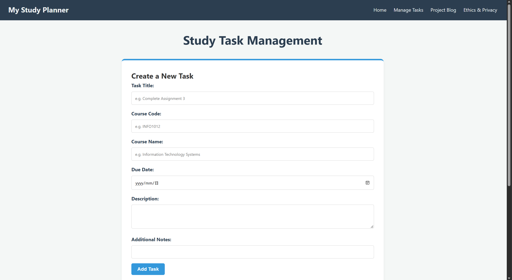
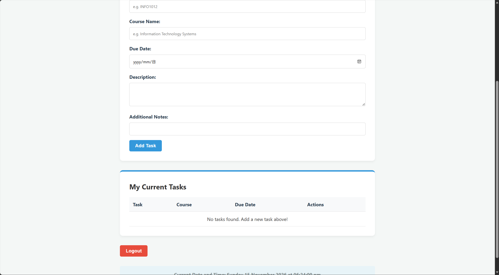

Project Plan & Troubleshooting Blog
1. Agile Methodology in Development
For this project, I adopted aspects of the Agile methodology, specifically focusing on iterative development and continuous feedback. Instead of trying to build the entire application at once, I broke the project down into smaller, manageable features (like the login system, task creation, and validation).
Reasoning: By using Agile principles, I was able to test each feature immediately after building it. This made it much easier to identify bugs early on, preventing them from cascading into larger issues later in the development process.
2. 3-Week Sprint Plan
Below is the project plan outlining the development phases over a 3-week sprint.
| Phase | Tasks & Deliverables |
|---|---|
| Planning | Define project scope, create wireframes, and set up the GitHub repository. |
| Analysis | Identify key features (CRUD tasks, login) and determine necessary data fields (course code, due date, etc.). |
| Design | Develop the HTML structure for all pages and create a consistent CSS layout (cards, navigation bar). |
| Implementation | Write JavaScript for interactivity: image carousel, login validation, and task management logic. |
| Testing & Maintenance | Test edge cases (past dates, empty fields), fix bugs, and write documentation (this blog). |
3. Troubleshooting Log
Error 1: JavaScript File Not Loading
Date/Time Encountered: 10 Nov 2026, 14:30 PM
Error Screenshot:

Code Causing the Issue:
// Incorrect script path in HTML
<script src="js/tasks_error.js"></script>Date/Time Resolved: 10 Nov 2026, 15:15 PM
Working Screenshot:

Corrected Code:
// Corrected script path
<script src="js/tasks.js"></script>Explanation: The cause of the issue was a typo in the file path when linking the external JavaScript file. The browser returned a "404 Not Found" error in the console, preventing the task logic from running. I resolved it by correcting the filename in the HTML script tag, ensuring the browser could locate the correct JavaScript file.
Error 2: Invalid Date Validation Logic
Date/Time Encountered: 11 Nov 2026, 10:00 AM
Error Screenshot:
Code Causing the Issue:
// Incorrect implementation
const today = new Date();
const selectedDate = new Date(dueDate);
if (selectedDate < today) {
// Error logic here
}Date/Time Resolved: 11 Nov 2026, 11:30 AM
Working Screenshot:
Corrected Code:
// Corrected implementation
const today = new Date();
today.setHours(0, 0, 0, 0); // Reset time to midnight
const selectedDate = new Date(dueDate);
if (selectedDate < today) {
// Correct logic here
}Explanation: The issue was that the system allowed users to enter today's date but flagged it as an error if the time of day had already passed. I resolved this by using setHours(0,0,0,0) to reset the current time to midnight, allowing tasks to be due on the current day regardless of the current hour.